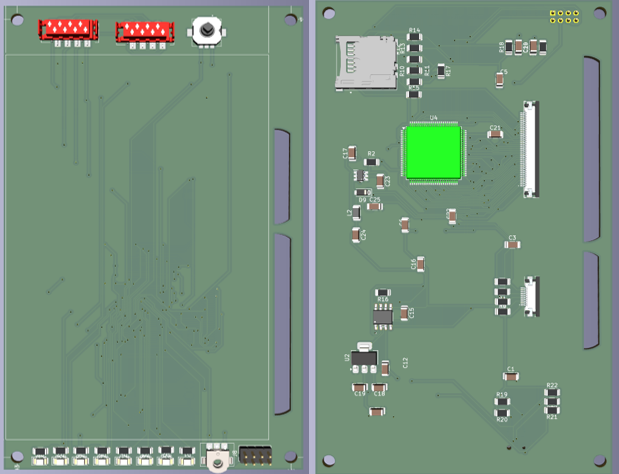
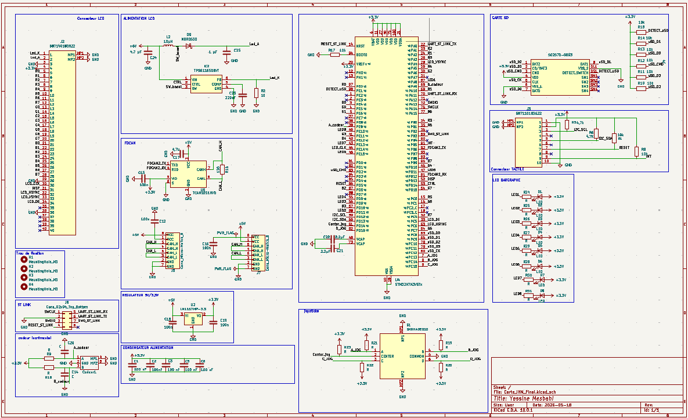
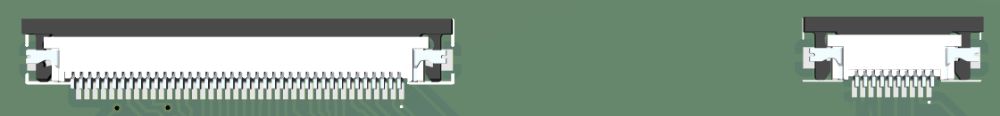
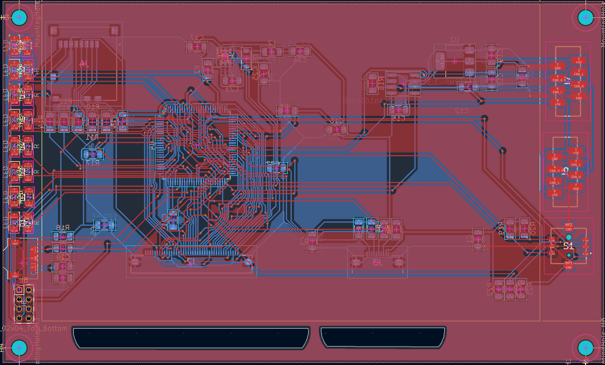
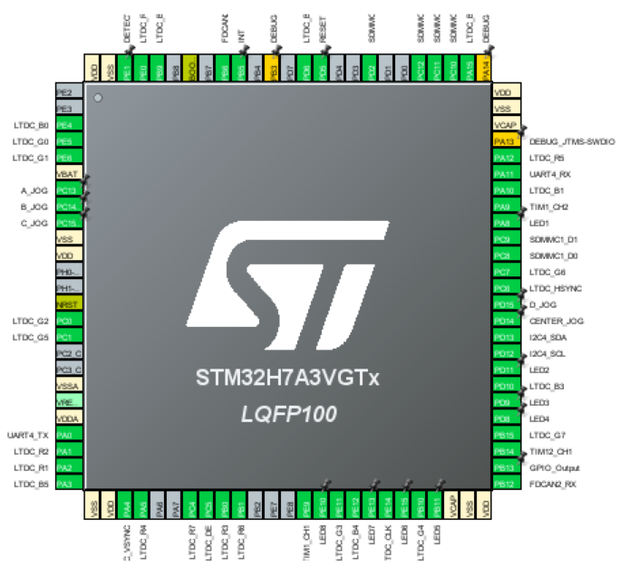

← Retour à l'accueil
Conception d'une IHM Embarquée : Écran Tactile & STM32
KiCad 7
STM32H7
STM32CubeMX
Écran TFT 4.3"
PCB Design
Ce projet consiste en la conception complète d'une carte électronique (PCB) servant d'Interface Homme-Machine (IHM). Architecturée autour d'un microcontrôleur STM32, la carte intègre un écran TFT 4.3" avec dalle tactile capacitive, un lecteur de carte SD et un joystick analogique. L'objectif est de fournir une plateforme robuste pour des applications industrielles ou de contrôle embarqué.

Vue 3D préliminaire du circuit imprimé intégrant la connectique de l'écran TFT.
1. Conception de l'Architecture Matérielle
La conception de cette carte a nécessité l'intégration de plusieurs technologies embarquées et la résolution de contraintes matérielles spécifiques autour du microcontrôleur STM32H7 :
- Contrôle de l'affichage (LTDC) : Implémentation d'un bus parallèle RGB 24-bits pour piloter l'écran TFT 4.3". Cette architecture m'a permis de configurer le périphérique matériel LTDC du STM32 pour garantir un rafraîchissement fluide.
- Électronique de Puissance : Dimensionnement d'un circuit hacheur élévateur (Boost) autour d'un driver TPS61165. J'ai réalisé les calculs de la boucle de régulation (résistance de feedback) pour l'adapter aux contraintes strictes du rétroéclairage (génération de 32V sous 20mA).
- Acquisition des interactions : Intégration d'un bus I2C pour la communication avec la dalle tactile capacitive, couplé à la gestion d'interruptions matérielles (EXTI) pour optimiser le temps de réponse du système.
2. Conception du Schéma Électronique (KiCad)
Le schéma a été rigoureusement construit sur KiCad en respectant les normes industrielles et les spécifications des datasheets des fabricants (STMicroelectronics, Würth, Midas).

Partie du schéma illustrant le câblage du STM32, incluant le dimensionnement critique des condensateurs VCAP (2.2 µF Céramique X7R) pour la stabilité du LDO interne.
Sécurisation des Périphériques
Une attention particulière a été portée au câblage de la carte SD en mode SDIO. Les lignes de données (D0-D3) et de commande (CMD) ont été sécurisées par des résistances de Pull-Up, tandis que l'horloge (CLK) a été traitée avec soin pour garantir l'intégrité du signal haute fréquence.
3. Routage du Circuit Imprimé (PCB) et Contraintes Mécaniques
Le passage au routage a nécessité une gestion précise de l'espace. L'écran mesurant 105,50 x 67,20 mm, ces dimensions ont dicté le "terrain de jeu" du PCB pour permettre à la carte de se cacher parfaitement derrière l'affichage, créant un bloc compact.


À gauche : Connecteurs CMS ZIF au pas de 0.5 mm pour les nappes FPC. À droite : Tracé des pistes respectant l'impédance et la topologie des bus à haute vitesse.
Intégration Mécanique 3D
Pour la conception du futur boîtier, la cote TP VA (Touch Panel View Area) de l'écran a été extraite avec précision de la datasheet. C'est cette dimension exacte (96.24 mm) qui permet de définir la fenêtre du boîtier plastique, en incluant un dégagement pour l'adhésif double face industriel utilisé lors de l'assemblage.
4. Configuration Logicielle (STM32CubeMX & IDE)
La transition entre le matériel et le code s'est effectuée via la suite logicielle STMicroelectronics. L'enjeu principal a été la traduction stricte des datasheets vers la configuration bas niveau du microcontrôleur :
- Paramétrage CubeMX : Configuration précise de l'arbre d'horloge (Clock Tree) pour générer la Pixel Clock exigée par l'écran. Réglage des timings de synchronisation matérielle (HSYNC, VSYNC, Porches) au sein du périphérique LTDC.
- Optimisation matérielle : Activation de l'accélérateur graphique matériel DMA2D (Chrom-Art) pour libérer le processeur principal lors des opérations de copie de mémoire vidéo.
- Génération HAL (CubeIDE) : Génération du code source en C/C++ utilisant la couche d'abstraction matérielle (HAL) pour initialiser les périphériques I2C, SDIO et configurer les vecteurs d'interruptions (NVIC) du tactile.

Paramétrage du LTDC et de l'arbre d'horloge sous STM32CubeMX pour correspondre aux exigences de l'écran Midas.
Conclusion & Perspectives
La conception de cette IHM a été un formidable exercice de rigueur en ingénierie électronique et logicielle. Elle m'a permis d'appréhender le cycle complet de création d'une plateforme embarquée : de l'analyse comparative des datasheets à la validation des schémas, jusqu'aux compromis mécaniques et à la configuration bas niveau.
🚀 Prochaines Étapes
Après la fabrication du PCB, le travail se concentrera sur la couche applicative. Le framework TouchGFX sera déployé par-dessus la configuration existante pour programmer l'interface graphique finale, animer les éléments visuels et traiter les interactions tactiles complexes.